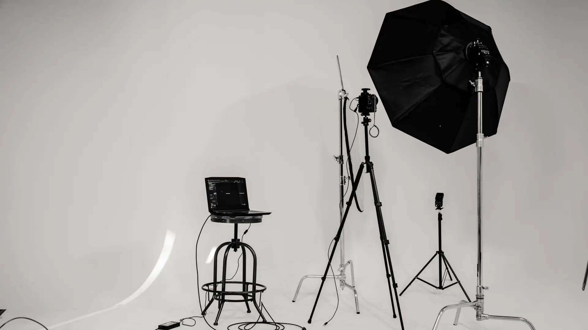
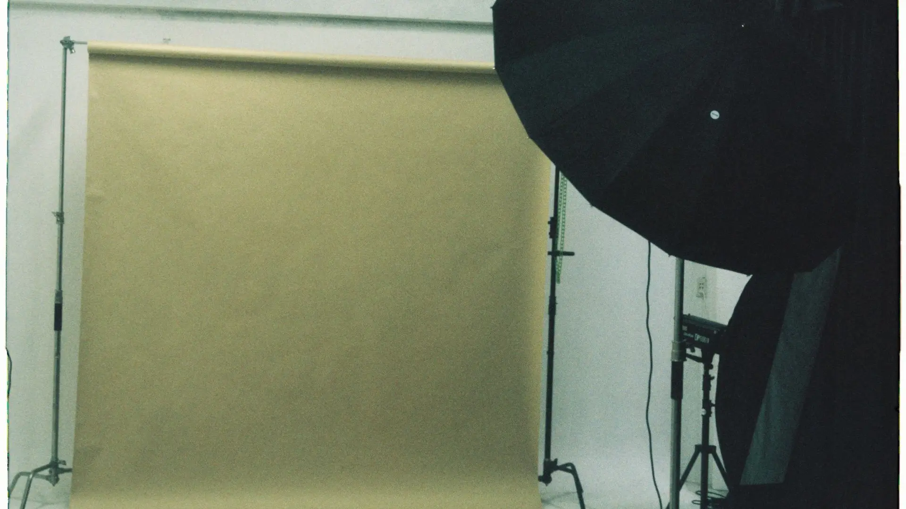
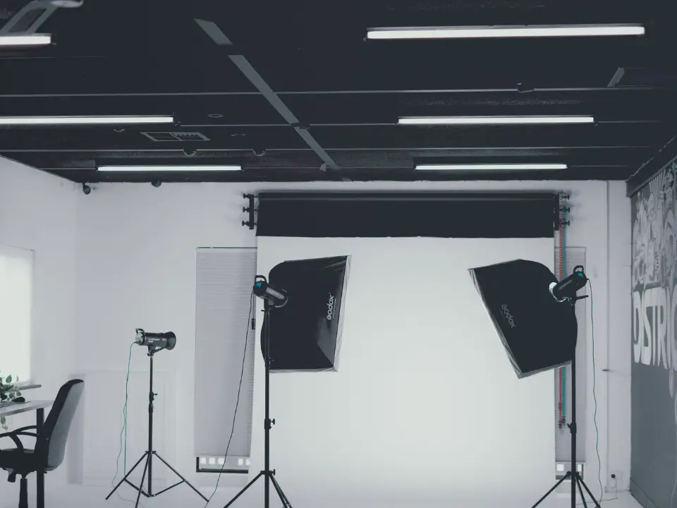

Escalier extérieur, béton
2024
35 mm · f/8 · 1/160 s
Une rampe blanche traverse un mur de béton brut ; deux grilles de ventilation en bas, un panneau métallique nervuré à droite. Noir et blanc, aucune retouche.
Atelier Lumen — photographe — Québec
Huit images, montrées en grand et sans retouche. Le nombre de fichiers retenus, le délai de livraison et les droits d’usage sont écrits avant la séance.
Une rampe blanche traverse un mur de béton brut ; deux grilles de ventilation en bas, un panneau métallique nervuré à droite. Noir et blanc, aucune retouche.
On photographie des lieux et des objets. Pas de personnes — c’est une limite, et elle est écrite.
Architecture, intérieur, objet. En studio à Québec ou sur place, dans un rayon de 40 km. Ce qui sort de là est montré tel quel : pas de filtre, pas de ciel rapporté, pas de couleur changée.
La série
Faites glisser vers la droite. Chaque œuvre occupe une fenêtre entière et porte son numéro. Au survol, la légende se déplie ; au clavier, la touche de tabulation passe de l’une à l’autre.
01 / 07

Le béton a vieilli par plaques, le vitrage est vert bouteille. Le décalage d’un rang à l’autre est ce qui tient l’image ; il fallait le prendre bien en face.
02 / 07

Un ciel couvert n’est pas une mauvaise journée : c’est la seule lumière qui laisse lire les barres d’acier sans les brûler.
03 / 07

Le V n’est pas dans le bâtiment : c’est le reflet de celui d’en face. Il n’apparaît que depuis un point, et il disparaît trois pas plus loin.
04 / 07

Deux murs presque blancs, et entre eux une bande de verre sombre. Au téléobjectif, l’écart entre les deux pans se referme et l’ouverture devient une ligne.
05 / 07

Le crépi tient toute la surface, et un seul bandeau de fenêtres la coupe. Les verticales sont redressées : c’est fait sur tous les fichiers livrés.
06 / 07

Blanc sur blanc. L’objet ne se détache que par son ombre : c’est elle qu’on place en premier, l’objet vient ensuite.
07 / 07

Une seule source, très basse, et le reste du mur laissé dans l’ombre. Le rouge n’a pas été relevé : c’est celui que la lumière a donné.
Ce que vous recevez

Le tirage n’est pas compris. La commande se passe chez le laboratoire de votre choix, avec le fichier livré — c’est le vôtre.
Un fond blanc n’est pas une absence de décision : c’est deux sources mesurées, à la même hauteur, et un cadre qu’on garde vide tant que rien ne mérite d’y entrer.
Les deux projecteurs sont aux bords opposés ; entre eux, il n’y a rien. Un pied à roulettes entre par le bas, à gauche, et c’est tout ce qui reste de l’atelier.
L’atelier
Le studio est monté, mesuré et vérifié avant l’heure convenue. Les heures comptées commencent quand la première prise est possible, pas quand le premier pied sort de son sac.

La table de tri est à gauche, la source principale à droite. Rien ne bouge une fois que la première image est faite : c’est ce qui garantit que la dernière ressemble à la première.

Deux boîtes à lumière de part et d’autre du fond, et rien devant. Les rouleaux de fond sont rangés contre le mur ; le choix se fait avant la séance, pas pendant.

L’état dans lequel la pièce se trouve à l’heure zéro. Une prise de courant suffit ; la grille du plafond n’est pas utilisée.
Le déroulé
L’horaire ci-dessous est celui d’un mandat d’intérieur de six pièces. Pour l’objet en studio, il se resserre ; pour un extérieur, il suit le ciel. Il garde la même forme.
La lumière du jour se relève pièce par pièce avant qu’un seul pied sorte de son sac. C’est ce relevé qui fixe l’ordre de passage, et il ne se refait pas ensuite.
Trois quarts d’heure : hauteur d’appareil, verticales, exposition. Les cinq suivantes vont trois fois plus vite parce que celle-là a été faite lentement.
Une pièce, deux points de vue. Deux passages de lumière quand la fenêtre et le plafonnier ne s’accordent pas ; un seul quand ils s’accordent.
Selon le ciel. Une date de repli est inscrite au contrat : si la lumière n’y est pas, l’extérieur se reprend à cette date sans frais, et les intérieurs se font quand même.
On passe la planche complète avec la personne responsable, sur place. Un plan manquant se rattrape maintenant, pas dans quinze jours.
Vingt minutes, hors des heures comptées. Le tri commence le soir même ; le décompte des quinze jours ouvrables part le lendemain.

Le fond est déroulé, le parapluie est ouvert, et personne n’est encore entré. C’est l’heure zéro, et elle n’est pas comptée.
Avant
Six points. Ils prennent une heure à régler la veille, et ils valent une heure de séance. Le matériel, l’électricité et le rangement sont de notre côté.
Lumières allumées, stores à la même hauteur, et des ampoules de même température dans une même pièce. Deux blancs différents dans un plan se voient, et ne se corrigent pas ensemble.
Surfaces dégagées : câbles, télécommandes, boîtes de mouchoirs, poubelles sorties. Ce qui traîne se retire sur place, et ça se paie en minutes.
Les meubles ne se déplacent pas pendant la séance. Si une pièce doit changer, elle change avant : après, on ne revient pas en arrière sans tout refaire.
Une prise de courant à moins de six mètres du point de vue le plus éloigné. Une rallonge suffit ; deux commencent à se voir dans le plan.
Deux exemplaires de chaque référence pour l’objet, propres, avec la liste des codes. Un objet neuf sous une boîte à lumière montre chaque trace de doigt.
La liste des plans attendus, dans l’ordre. C’est elle qui sert au nommage des fichiers, et une correction après coup renomme toute la série.

Une table, un écran, une source. C’est là que la planche se trie le soir de la séance, avant que le décompte des jours ouvrables commence.
Écrire
Réponse écrite sous un jour ouvrable : le nombre de fichiers, le délai et la licence d’usage. Rien à signer pour recevoir une réponse.
Formulaire de démonstration : il n’envoie rien, et rien n’est enregistré.